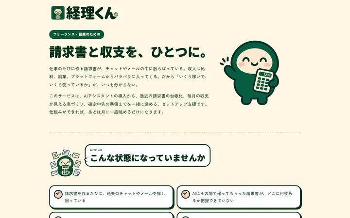
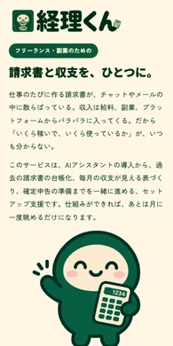
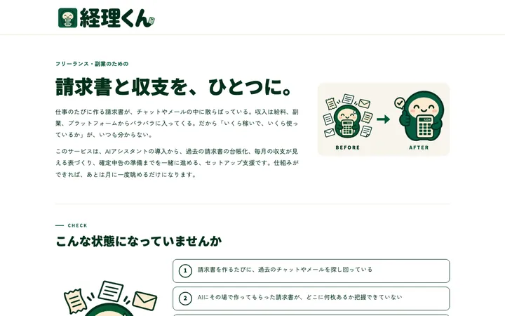
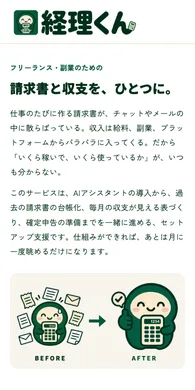
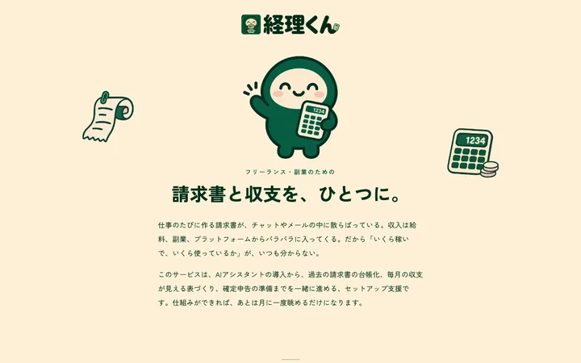
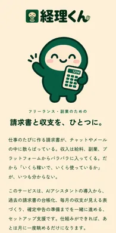
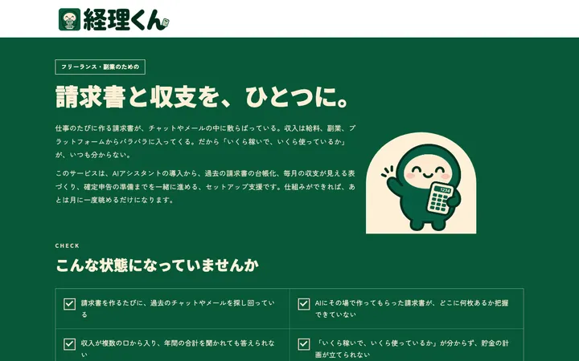
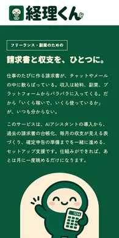
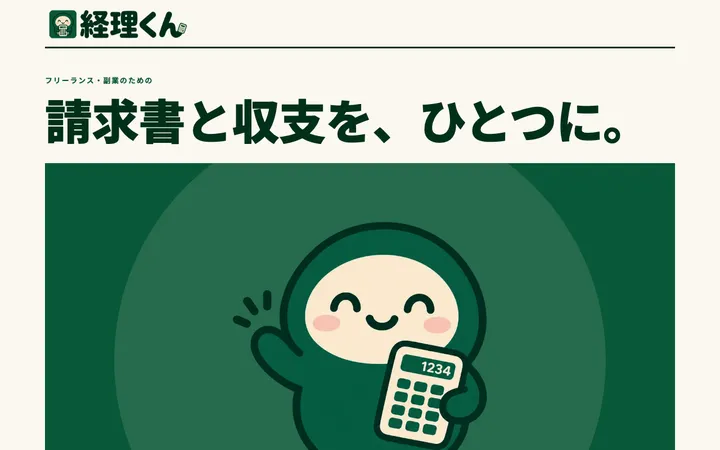
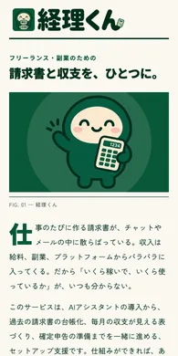

LPデザイン5案の見比べ
本文はすべて現行ページと同じです。番号で選んでください。カードを押すと各案が開きます。










現行の公開ページ：yukitchy.github.io/money-setup-lp/
本文はすべて現行ページと同じです。番号で選んでください。カードを押すと各案が開きます。










現行の公開ページ：yukitchy.github.io/money-setup-lp/